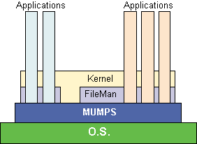

Hardhats, DHCP and VistA |
|
Hardhats, DHCP and VistA |
|
| It all started... | It all started...
Over thirty years ago, the Department of Veterans Affairs (DVA) set about on an epic journey with the launch of a mammoth effort to automate their 170+ medical centers. They chose the ANSI MUMPS computer language as their foundation and erected a framework to support their applications. Originally called DHCP, VISTA is well suited for use outside of the DVA and healthcare, a very well kept secret indeed. At its very core you have all the tools and materials you need to build an economical, efficient, scaleable and integrated computer system. If you swing the boom a little wider, you find that VISTA also contains a staggering number of hospital applications that all share a common set of files for patients, providers, users, etc. Add to this combination low-cost availability under the Freedom Of Information Act (FOIA) and you have a compelling argument for adoption. It sounds too good to be true, except for perhaps one thing. Where will you get support? Help is just a click away... HARDHATS.ORG! To join the community, visit this site often and subscribe to the free electronic mailing list. Share your experiences and ideas with like-minded professionals. This site, itself almost 20 years old, depends on your feedback. You need to tell us what will help you support your current VISTA system or make the decision to adopt it. Whether you are an experienced VISTA user looking to exchange ideas or are just now considering it, this site is for you. Beginnings What is M? Foundation &
Framework
 VISTA is supported by Standards and Conventions that enforce the architecture shown in the above diagram. These standards are worthwhile for any MUMPS programmer to study, but they are required reading for adopters of VISTA/DHCP. How do I get the software? |
Search | Home | MUMPS | Fileman | Kernel | C/S, Mailman, Web | Programmer Tools | Applications